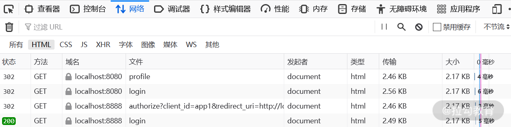
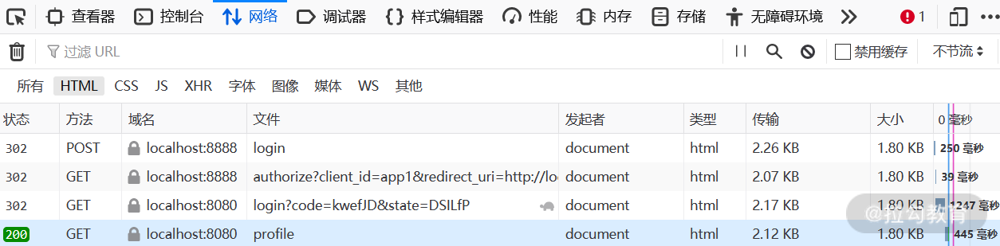

- 00 开篇词 Spring Security，为你的应用安全与职业之路保驾护航.md.html
- 01 顶级框架：Spring Security 是一款什么样的安全性框架？.md.html
- 02 用户认证：如何使用 Spring Security 构建用户认证体系？.md.html
- 03 认证体系：如何深入理解 Spring Security 用户认证机制？.md.html
- 04 密码安全：Spring Security 中包含哪些加解密技术？.md.html
- 05 访问授权：如何对请求的安全访问过程进行有效配置？.md.html
- 06 权限管理：如何剖析 Spring Security 的授权原理？.md.html
- 07 案例实战：使用 Spring Security 基础功能保护 Web 应用.md.html
- 08 管道过滤：如何基于 Spring Security 过滤器扩展安全性？.md.html
- 09 攻击应对：如何实现 CSRF 保护和跨域 CORS？.md.html
- 10 全局方法：如何确保方法级别的安全访问？.md.html
- 11 案例实战：使用 Spring Security 高级主题保护 Web 应用.md.html
- 12 开放协议：OAuth2 协议解决的是什么问题？.md.html
- 13 授权体系：如何构建 OAuth2 授权服务器？.md.html
- 14 资源保护：如何基于 OAuth2 协议配置授权过程？.md.html
- 15 令牌扩展：如何使用 JWT 实现定制化 Token？.md.html
- 16 案例实战：基于 Spring Security 和 Spring Cloud 构建微服务安全架构.md.html
- 17 案例实战：基于 Spring Security 和 OAuth2 实现单点登录.md.html
- 18 技术趋势：如何为 Spring Security 添加响应式编程特性？.md.html
- 19 测试驱动：如何基于 Spring Security 测试系统安全性？.md.html
- 20 结束语 以终为始，Spring Security 的学习总结.md.html
- 捐赠
17 案例实战：基于 Spring Security 和 OAuth2 实现单点登录
单点登录（Single Sign-On，SSO）是我们设计和实现 Web 系统时经常需要面临的一个问题，允许用户使用一组凭据来登录多个相互独立但又需要保持统一登录状态的 Web 应用程序。单点登录的实现需要特定的技术和框架，而 Spring Security 也提供了它的解决方案。本课时将基于 OAuth2 协议来构建 SSO。
什么是单点登录？
与其说 SSO 是一种技术体系，不如说它是一种应用场景。因此，我们有必要先来看看 SSO 与本专栏前面所介绍的各种技术体系之间的关联关系。
单点登录与OAuth2协议
假设存在 A 和 B 两个独立的系统，但它们相互信任，并通过单点登录系统进行了统一的管理和维护。那么无论访问系统 A 还是系统 B，当用户在身份认证服务器上登录一次以后，即可获得访问另一个系统的权限。同时这个过程是完全自动化的，SSO 通过实现集中式登录系统来达到这一目标，该系统处理用户的身份认证并与其他应用程序共享该认证信息。
说到这里，你可能会问为什么我们需要实施 SSO 呢？原因很简单，因为它提供了很多优势。下面我们具体分析一下。
- 首先，借助 SSO 可以确保系统更加安全，我们只需要一台集中式服务器来管理用户身份，而不需要将用户凭证扩展到各个服务，因此能够减少被攻击的维度。
- 其次，可以想象持续输入用户名和密码来访问不同的服务，是一件让用户感到很困扰的事情。而 SSO 将不同的服务组合在一起，以便用户可以在服务之间进行无缝导航，从而提高用户体验。
- 同时，SSO 也能帮助我们更好地了解客户，因为我们拥有对客户信息的单一视图，能够更好地构建用户画像。
那么，如何构建 SSO 呢？各个公司可能有不同的做法，而采用 Spring Security 和 OAuth2 协议是一个不错的选择，因为实现过程非常简单。虽然 OAuth2 一开始是用来允许用户授权第三方应用访问其资源的一种协议，也就是说其目标不是专门用来实现 SSO，但是我们可以利用它的功能特性来变相地实现单点登录，这就需要用到 OAuth2 四种授权模式中的授权码模式。关于 OAuth2 协议和授权码模式，你可以参考《开放协议：OAuth2协议解决的是什么问题？》做一些回顾。同时，在使用 OAuth2 协议实现SSO时，我们也会使用 JWT 来生成和管理 Token，关于 JWT，你也可以回顾《令牌扩展：如何使用JWT实现定制化Token？》课时中的内容。
单点登录的工作流程
在具体介绍实现方案之前，我们先对 SSO 的工作流程做一下展开，从而了解典型 SSO 系统背后的设计思想。下图描述了 SSO 流程，可以看到我们有两个应用程序 App1 和 App2，以及一个集中式 SSO 服务器。

SSO 工作流程图
结合上图，我们先来看针对 App1 的工作流程。
- 用户第一次访问 App1。由于用户未登录，所以将用户重定向到 SSO 服务器。
- 用户在 SSO 服务器提供的登录页面上输入用户凭据。SSO 服务器验证凭据并生成 SSO Token，然后 SSO 服务器在 Cookie 中保存这个 Token，以供用户进行后续登录。
- SSO 服务器将用户重定向到 App1。在重定向 URL 中，就会附上这个 SSO Token 作为查询参数。
- App1 将 Token 保存在其 Cookie 中，并将当前的交互方式更改为已登录的用户。App1 可以通过查询 SSO 服务器或 Token 来获取与用户相关的信息。我们知道 JWT 是可以自定义扩展的，所以这时候就可以利用 JWT 来传递用户信息。
现在，我们再来看一下同一用户尝试访问 App2 的工作流程。
- 由于应用程序只能访问相同来源的 Cookie，它不知道用户已登录到 App2。因此，同样会将用户重定向到 SSO 服务器。
- SSO 服务器发现该用户已经设置了 Cookie，因此它会立即将用户重定向到 App2，并在 URL 中附加 SSO Token 作为查询参数。
- App2 同样将 Token 存储在 Cookie 中，并将其交互方式更改为已登录用户。
整个流程结束之后，用户浏览器中将设置三个 Cookie，每个 Cookie 分别针对 App1、App2 和 SSO Server 域。
关于上述流程，业界存在各种各样的实现方案和工具，包括 Facebook Connect、Open Id Connect、CAS、Kerbos、SAML 等。我们无意对这些具体的工具做详细展开，而是围绕到目前为止已经掌握的技术来从零构建SSO服务器端和客户端组件。
实现 SSO 服务器端
基于 Spring Security实现 SSO 服务端的核心工作，还是使用一系列我们已经很熟悉的配置体系，来配置基础的认证授权信息，以及与 OAuth2 协议之间的整合过程。
配置基础认证和授权信息
我们同样通过继承 WebSecurityConfigurerAdapter 类来实现自定义的认证和授权信息配置，这个过程比较简单，完整代码如下所示：
@Configuration
public class WebSecurityConfiguration extends WebSecurityConfigurerAdapter {
@Override
protected void configure(AuthenticationManagerBuilder auth) throws Exception {
auth.userDetailsService(userDetailsServiceBean()).passwordEncoder(passwordEncoder());
}
@Override
public void configure(WebSecurity web) throws Exception {
web.ignoring().antMatchers("/assets/**", "/css/**", "/images/**");
}
@Override
protected void configure(HttpSecurity http) throws Exception {
http.formLogin()
.loginPage("/login")
.and()
.authorizeRequests()
.antMatchers("/login").permitAll()
.anyRequest()
.authenticated()
.and().csrf().disable().cors();
}
@Bean
@Override
public UserDetailsService userDetailsServiceBean() {
Collection<UserDetails> users = buildUsers();
return new InMemoryUserDetailsManager(users);
}
private Collection<UserDetails> buildUsers() {
String password = passwordEncoder().encode("12345");
List<UserDetails> users = new ArrayList<>();
UserDetails user_admin = User.withUsername("admin").password(password).authorities("ADMIN", "USER").build();
users.add(user_admin);
return users;
}
@Bean
public PasswordEncoder passwordEncoder() {
return new BCryptPasswordEncoder();
}
@Bean
@Override
public AuthenticationManager authenticationManagerBean() throws Exception {
return super.authenticationManagerBean();
}
}
在上述代码中，我们综合使用了已经掌握的 Spring Security 中与认证、授权、密码管理、CSRF、CORS 相关的多项功能特性，通过loginPage()方法指定了 SSO 服务器上的登录界面地址，并初始化了一个“admin”用户用来执行登录操作。
配置 OAuth2 授权服务器
然后，我们创建一个 AuthorizationServerConfiguration 类来继承 AuthorizationServerConfigurerAdapter，请注意，在这个类上需要添加 @EnableAuthorizationServer 注解，如下所示：
@EnableAuthorizationServer
@Configuration
public class AuthorizationServerConfiguration extends AuthorizationServerConfigurerAdapter {
配置 OAuth2 授权服务器的重点工作是指定需要参与 SSO 的客户端。在[《授权体系：如何在微服务架构中集成OAuth2协议？》]课时中，我们给出了 Spring Security 中描述客户端详情的 ClientDetails 接口，以及用于管理 ClientDetails 的 ClientDetailsService。基于 ClientDetailsService，我们就可以定制化对ClientDetails的创建过程，示例代码如下所示：
@Bean
public ClientDetailsService inMemoryClientDetailsService() throws Exception {
return new InMemoryClientDetailsServiceBuilder()
//创建 app1 客户端
.withClient("app1")
.secret(passwordEncoder.encode("app1_secret"))
.scopes("all")
.authorizedGrantTypes("authorization_code", "refresh_token")
.redirectUris("http://localhost:8080/app1/login")
.accessTokenValiditySeconds(7200)
.autoApprove(true)
.and()
// 创建 app2 客户端
.withClient("app2")
.secret(passwordEncoder.encode("app2_secret"))
.scopes("all")
.authorizedGrantTypes("authorization_code", "refresh_token")
.redirectUris("http://localhost:8090/app2/login")
.accessTokenValiditySeconds(7200)
.autoApprove(true)
.and()
.build();
}
这里我们通过 InMemoryClientDetailsServiceBuilder 构建了一个基于内存的 ClientDetailsService，然后通过这个 ClientDetailsService 创建了两个 ClientDetails，分别对应 app1 和 app2。请注意，这里指定的 authorizedGrantTypes为代表授权码模式的 “authorization_code”。
同时，我们还需要在 AuthorizationServerConfiguration 类中添加对 JWT 的相关设置：
@Override
public void configure(AuthorizationServerEndpointsConfigurer endpoints) throws Exception {
endpoints.accessTokenConverter(jwtAccessTokenConverter())
.tokenStore(jwtTokenStore());
}
@Bean
public JwtTokenStore jwtTokenStore() {
return new JwtTokenStore(jwtAccessTokenConverter());
}
@Bean
public JwtAccessTokenConverter jwtAccessTokenConverter() {
JwtAccessTokenConverter jwtAccessTokenConverter = new JwtAccessTokenConverter();
jwtAccessTokenConverter.setSigningKey("123456");
return jwtAccessTokenConverter;
}
这里使用的设置方法我们在[《令牌扩展：如何使用JWT实现定制化Token？》])课时中都已经介绍过了，这里不再详细展开。
实现 SSO 客户端
介绍完 SSO 服务器端配置，接下来，我们来讨论客户端的实现过程。在客户端中，我们同样创建一个继承了 WebSecurityConfigurerAdapter 的 WebSecurityConfiguration，用来设置认证和授权机制，如下所示：
@EnableOAuth2Sso
@Configuration
public class WebSecurityConfiguration extends WebSecurityConfigurerAdapter {
@Override
public void configure(WebSecurity web) throws Exception {
super.configure(web);
}
@Override
protected void configure(HttpSecurity http) throws Exception {
http.logout()
.and()
.authorizeRequests()
.anyRequest().authenticated()
.and()
.csrf().disable();
}
}
这里唯一需要强调的就是 @EnableOAuth2Sso 注解，这是单点登录相关自动化配置的入口，定义如下：
@Target(ElementType.TYPE)
@Retention(RetentionPolicy.RUNTIME)
@Documented
@EnableOAuth2Client
@EnableConfigurationProperties(OAuth2SsoProperties.class)
@Import({ OAuth2SsoDefaultConfiguration.class, OAuth2SsoCustomConfiguration.class,
ResourceServerTokenServicesConfiguration.class })
public @interface EnableOAuth2Sso {
}
在 @EnableOAuth2Sso 注解上，我们找到了 @EnableOAuth2Client 注解，代表启用了 OAuth2Client 客户端。同时，OAuth2SsoDefaultConfiguration 和 OAuth2SsoCustomConfiguration 用来配置基于 OAuth2 的 SSO 行为，而在 ResourceServerTokenServicesConfiguration 中则配置了基于 JWT 来处理 Token 的相关操作。
接着，我们在 app1 客户端的 application.yml 配置文件中，添加如下配置项：
server:
port: 8080
servlet:
context-path: /app1
这里用到了 server.servlet.context-path 配置项，用来设置应用的上下文路径，相当于为完整的URL地址添加了一个前缀。这样，原本访问“http://localhost:8080/login”的地址就会变成http://localhost:8080/app1/login，这是使用 SSO 时的一个常见的技巧。
然后，我们再在配置文件中添加如下配置项：
security:
oauth2:
client:
client-id: app1
client-secret: app1_secret
access-token-uri: http://localhost:8888/oauth/token
user-authorization-uri: http://localhost:8888/oauth/authorize
resource:
jwt:
key-uri: http://localhost:8888/oauth/token_key
这些配置项是针对 OAuth2 协议的专用配置项，我们看到了用于设置客户端信息的“client”配置段，除了客户端Id和密码之外，还指定了用于获取 token 的“access-token-uri”地址以及执行授权的“user-authorization-uri”地址，这些都应该指向前面已经创建的 SSO 服务器地址。
另一方面，一旦在配置文件中添加了“security.oauth2.resource.jwt”配置项，对Token的校验就会使用 JwtTokenStore了，这样就能跟SSO服务器端所创建的 JwtTokenStore 进行对应。
到目前为止，我们已经创建了一个 SSO 客户端应用 app1，而创建 app2 的过程是完全一样的，这里不再展开。完整的代码你可以参考https://github.com/lagouEdAnna/SpringSecurity-jianxiang/tree/main/SpringSsoDemo。
案例演示
最后，让我们演示一下整个单点登录过程。依次启动 SSO 服务器以及 app1 和 app2，然后在浏览器中访问 app1 地址http://localhost:8080/app1/system/profile，这时候浏览器就会重定向到 SSO 服务器登录页面。
请注意，如果我们在访问上述地址时打开了浏览器的“网络”标签并查看其访问路径，就可以看到确实是先跳转到了app1的登录页面（http://localhost:8080/app1/login），然后又重定向到 SSO 服务器。由于用户处于未登录状态，所以最后又重定向到 SSO 服务器的登录界面（http://localhost:8888/login），整个请求的跳转过程如下图所示：

未登录状态访问 app1 时的网络请求跳转流程图
我们在 SSO 服务器的登录界面输入正确的用户名和密码之后就可以认证成功了，这时候我们再看网络请求的过程，如下所示：

登录 app1 过程的网络请求跳转流程图
可以看到，在成功登录之后，授权系统重定向到 app1 中配置的回调地址（http://localhost:8080/app1/login）。与此同时，我们在请求地址中还发现了两个新的参数 code 和 state。app1 客户端就会根据这个 code 来访问 SSO 服务器的/oauth/token 接口来申请 token。申请成功后，重定向到 app1 配置的回调地址。
现在，如果你访问 app2，与第一次访问 app1 相同，浏览器先重定向到 app2 的登录页面，然后又重定向到 SSO 服务器的授权链接，最后直接就重新重定向到 app2 的登录页面。不同之处在于，此次访问并不需要再次重定向到 SSO 服务器进行登录，而是成功访问 SSO 服务器的授权接口，并携带着 code 重定向到 app2 的回调路径。然后 app2 根据 code 再次访问 /oauth/token 接口拿到 token，这样就可以正常访问受保护的资源了。
小结与预告
本课时是相对独立的一部分内容，针对日常开发过程中经常碰到的单点登录场景做了案例的设计和实现。我们可以把各个独立的系统看成一个个客户端，然后基于 OAuth2 协议来实现 SSO。此外，本课时还对如何构建 SSO 服务器端和客户端组件，以及两者之间的交互过程进行了详细的介绍。
这里给你留一道思考题：你能结合 OAuth2 协议描述 SSO 的整体工作流程吗？
介绍完 OAuth2 协议以及应用场景之后，我们将引入一个全新的话题，既响应式编程，这是一种技术趋势。下一课时我们将讨论如何为 Spring Security 添加响应式编程特性。
© 2019 - 2023 Liangliang Lee. Powered by gin and hexo-theme-book.